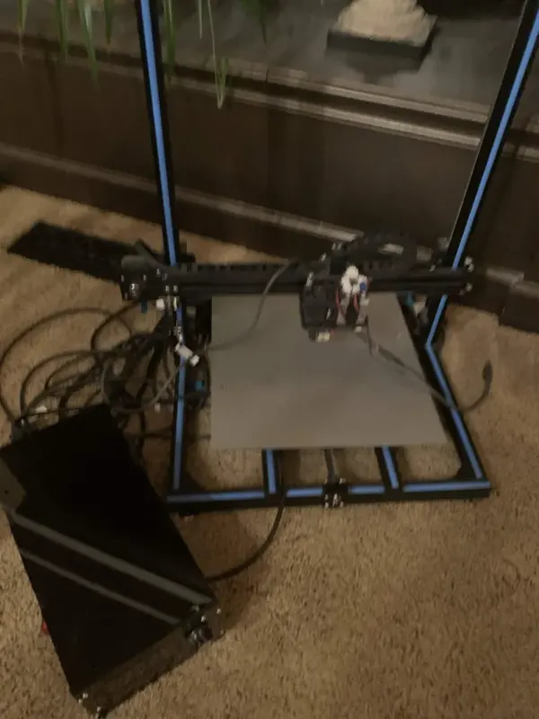

Gantry Liquid Handler
Engineering Portfolio / Personal / 2025–26| Frame | 2020 aluminum extrusion (reused), corner plates and brackets |
| Bracing | 2× ¼" threaded-rod diagonals, 545 mm, rod ends |
| Y axis | 2× MGN12 rails, 400 mm, MGN12H blocks |
| X axis | V-slot wheels on 625-2RS bearings |
| Z axis | Belt-driven, top motor, cross shaft to both sides |
| Motors | 3× NEMA 17 steppers (X, Y, Z) |
| Controller | Mellow FLY-D5 |
| Firmware | Klipper |
| Bed | Original heated bed, silicone spacers |
| CAD | Onshape |
Challenge
The school's 3D printer had broken down. Instead of repairing it, I redesigned the whole machine around a new job: positioning a liquid-handling tool repeatably over the bed. That meant a stiffer frame, rail-guided Y travel, and a Z axis that lifts both ends of the gantry together. Everything except the heated bed, the aluminum extrusions, and one repurposed lead screw is new.
Used to automatically dispense growth media into plates, with volume accuracy within 0.5 mL. Positioning repeatability is about ±0.1 mm on all axes, set mostly by belt tension and V-wheel preload.
Mechanisms
| Frame | Original 2020 extrusions with corner plates at the joints, plus two diagonal threaded-rod braces from the top corners to the base to resist racking. |
| Y axis | Bed carried on two MGN12 linear rails with MGN12H blocks. |
| X axis | Gantry carriage on V-slot wheels with 625-2RS bearings. |
| Z axis | Belt-driven. One NEMA 17 on the top beam turns a cross shaft that drives a belt on each side, so both ends of the X gantry lift together. The cross shaft is the old printer's T8 Z lead screw, reused. |
| Tool head | Converted from a hotend carriage to a liquid-handling mount. The end effector in the CAD is a placeholder. |
Before
